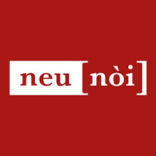

Laboratori di Quartiere
I Laboratori di Quartiere sono spazi di incontro e progettazione partecipata dove cittadini, associazioni e amministrazione si confrontano per immaginare insieme il futuro degli spazi pubblici.
Cosa Sono
Incontri Periodici
Appuntamenti regolari organizzati in diversi quartieri della città per discutere di progetti e iniziative.
Ascolto Attivo
Momenti di confronto dove i cittadini possono esprimere bisogni, idee e proposte per il proprio territorio.
Co-Progettazione
Workshop pratici per elaborare insieme proposte concrete di intervento sugli spazi pubblici.
Rete di Comunità
Creazione di reti di collaborazione tra cittadini attivi, associazioni e istituzioni.
Laboratori di Quartiere

neu [nòi]? spazio al lavoro
Palazzo Castrofilippo - Via Alloro 64 -90133 Palermo
Prossimi Appuntamenti
CeSVoP
Villa Trabia, Palermo - ore 18:30 - 24/ott/2025
Uso condiviso degli spazi urbani
Segui la pagina Facebook del Comune di Palermo e iscriviti alla newsletter per ricevere aggiornamenti sui prossimi laboratori nel tuo quartiere.